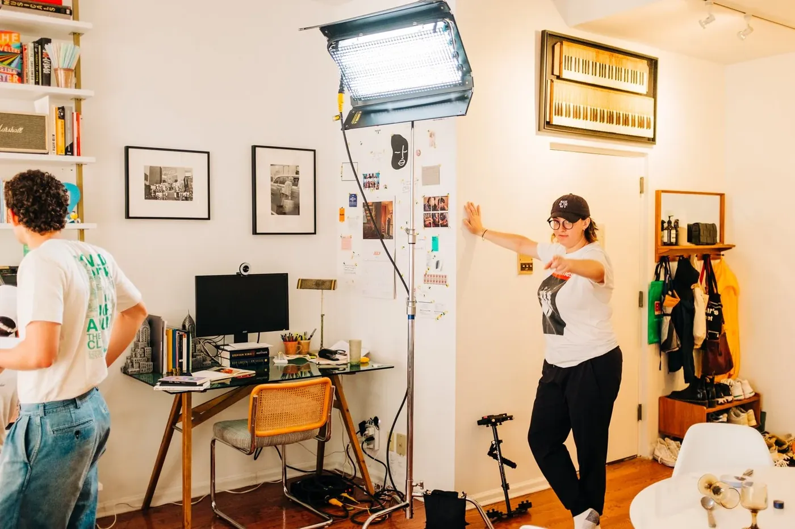

Sydney’s Credits
Download Work ResumeSelect Stage Management Work
OFF BROADWAY CREDITS
- SESAME STREET THE MUSICALPSMTheater 555 & Theater RowJonathan Rockefeller, dir.Rockefeller Productions
- SHAKESPEARE’S STARSSMNew Victory TheaterLauren Jost, dir.Spellbound Theater
- MY FIRST NUTCRACKERPSMTheater RowNYC Children's Theater
- ROOM ENOUGH (FOR US ALL)ASMWP TheaterKatherine Wilkinson, dir.Pipeline Festival
- TCHAIKOVSKY… LONELY HEARTPAPershing Square Signature CenterDonald Sanders, dir.
SELECT NEW YORK CITY CREDITS
- ANT FEST 2024 & 2025SMArs NovaAlex Duncker, pm.
- SEPTEMBER L. DAVIS: THE APOLOGY TOURSMStars Nova Series @ Ars NovaKevin Cahoon, dir.
- ROME IS FALLINGPSMAlice Tully Hall/ Lincoln CenterJulia Eichten, dir.Run AMOC* Festival
- WHITE WOMAN, BLACK BOYPSM & Asst. DirectorTheatre RowAustin Pendleton, dir.Broadway Bound Theatre Festival
NEW YORK WORKSHOP & CONCERT CREDITS
- SING OUT FOR FREEDOM CONCERT 2023, 2024, 2025sSMNYU Skirball CenterErich Bergen, dir.ACLU/NYCLU Event
- TIME STOPSSMDevelopmental WorkshopChad Larabee, dir.Michael J. Moritz, ep.
- SPARE PARTSSM29-Hour ReadingMichael Herwitz, dir.
- LONGSM29-Hour ReadingMichael Herwitz, dir.Ars Nova
- LULLABY LANDSMDevelopmental Workshop Phase 2 & 3Spellbound Theater
- BELVAASM29-Hour PresentationKaren Carpenter, dir.Janine Turner, prod. & writer.
- HIS STORYPSMDevelopmental WorkshopJeff Calhoun, dir.
Select Production Management Work
PRODUCTION MANAGEMENT CREDITS
- OHIOProduction AssociateThe Bengsons/ FMPAndie Burns, reh. sm
- NBA ALL STAR GAME 2024 & 2025Production CoordinatorNational Basketball Asso.Emma Sonricker, pm.
- PAN ASIAN REP MAINSTAGE 2024, 2025 & 2026Production ManagerART/NYCChongren Fan, prod asso.
- EAT THE DOCUMENTProduction ManagerPrototype Festival at HERE ARTSKristin Marting, dir.
- FEEJEE MERMAIDProduction ManagerThe FleaDrops in the Vase
- LITTLE ISLANDAssistant Production ManagerLittle IslandPatrick LaChance, pm.Kelsey Martinez, dir. art prog.
- LOVE MUSIC SHELTERThe Short FilmAssistant Production ManagerOver The Rainbow EntertainmentAlixx Schottland, prod.
- WHAT ELSE IS TRUEProduction ManagerEgg & Spoon Theatre CollectiveLiam Lonegan, artistic dir.
- CONCERTS IN THE PARKProduction AssociateNew York PhilharmonicNathan Cabana, pm.
- PUBLIC THEATERProduction Management InternThe Public TheaterPeggy Carrey, asso. pm
- VICTORY DANCE 2017Assistant Production ManagerThe Duke on 42nd StreetColleen Davis, psm
